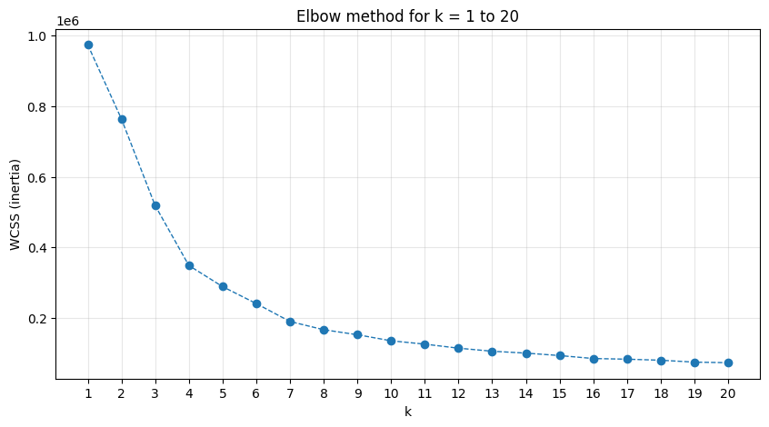
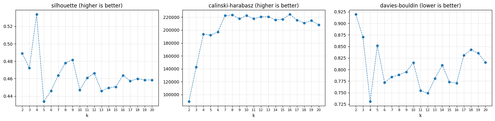
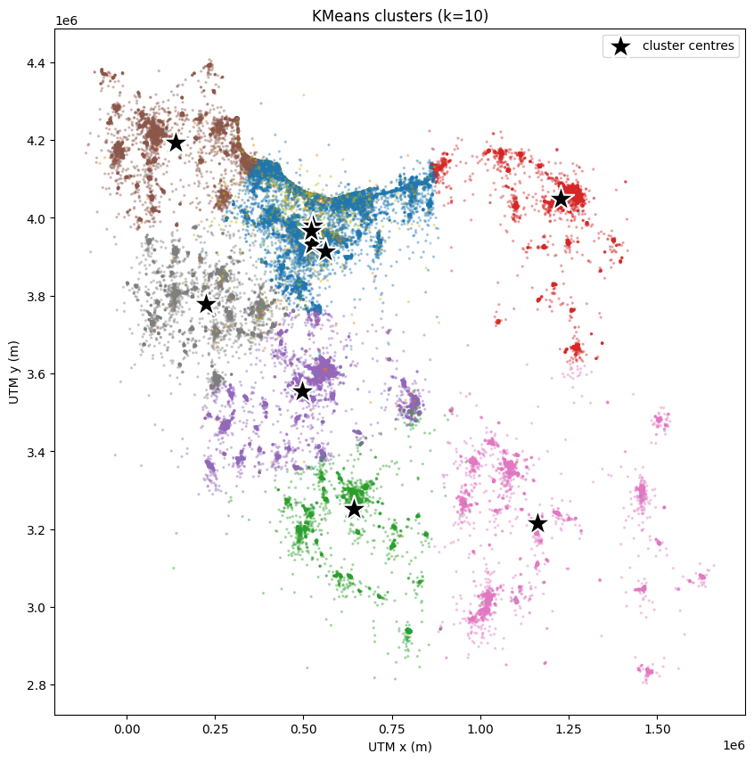
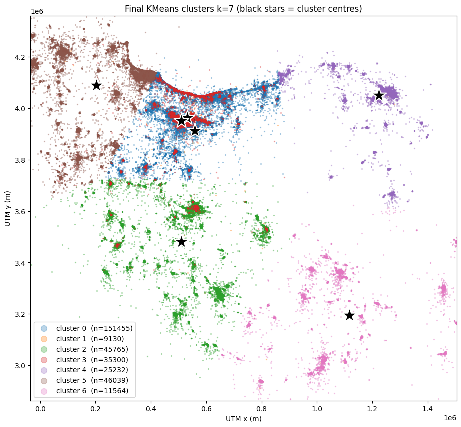
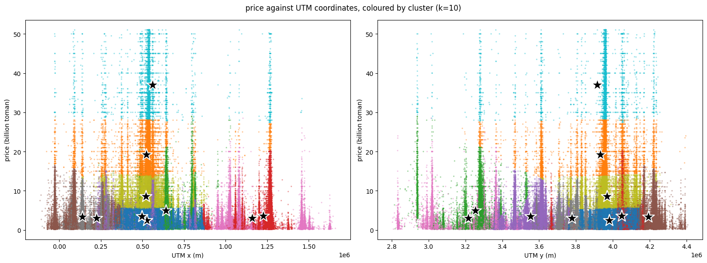
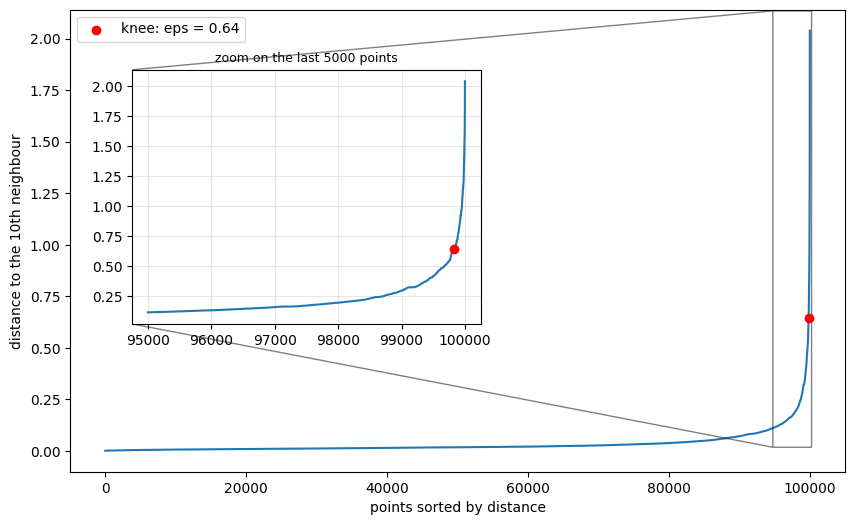
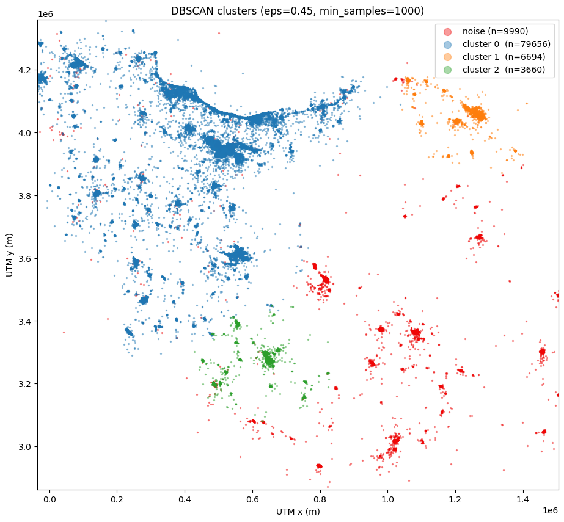
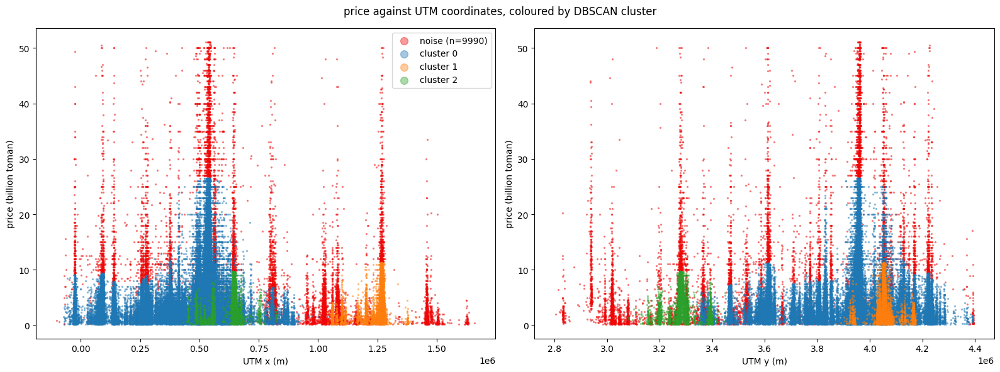

Clustering & recommender
Each cluster is a "market", for example luxury North-Tehran apartments or the budget market of the southern cities. We cluster 324,485 cleaned sale listings on price + location, choose the number of clusters, cross-check with DBSCAN, and recommend listings from inside the user's cluster.
Prepare
IQR on log price & size, drop coordinates outside Iran, convert lat/lon to UTM (fixed zone 39) so distances are in metres everywhere.
Pick features
Four feature sets scored with Silhouette, Calinski-Harabasz and Davies-Bouldin.
Choose k
Elbow + KneeLocator, three metrics, and a comparison of cluster profiles: k = 7.
DBSCAN
Start eps from the k-distance plot, then grid-search eps × min_samples.
Recommend
Nearest listings in the same cluster and property type, in scaled price + location space.
1 · Which features make the best clusters?
K-means with k = 10 on 275,143 listings that have every candidate feature. Pick a metric.
Result
- All three metrics pick C: price + UTM (silhouette 0.476, Davies-Bouldin 0.751).
- Every extra feature made the clusters worse and added dimensions.
- Rooms was dropped because it carries the same information as size (r = 0.62). Build year was dropped because it is unrelated to price (r = −0.03).
| price | size | rooms | year | |
|---|---|---|---|---|
| price | 1 | 0.40 | 0.34 | −0.03 |
| size | 0.40 | 1 | 0.62 | 0.09 |
| rooms | 0.34 | 0.62 | 1 | 0.12 |
2 · How many clusters?
The elbow is not visible by eye. KneeLocator returns 7. Silhouette and Davies-Bouldin prefer 4, while Calinski-Harabasz flattens after 7. Compare the cluster profiles for each k:
Profiles





3 · DBSCAN parameter explorer
Run on a 100k sample of price + UTM, standardised (fitting all 324k rows does not fit in memory at this eps). The k-distance knee suggested eps = 0.64, which put almost everything into one cluster (99,913 of 100,000 points). Explore the searches that followed.
Sweep one parameter
Larger eps gives fewer clusters and less noise. Larger min_samples gives more noise.
Grid search: pick eps and min_samples
Grid overview: noise %
Each cell shows the noise share and the cluster count. Click a cell to select it.
Final DBSCAN · eps = 0.45, min_samples = 1000
| Cluster | n | Median price | m² | Top cities |
|---|---|---|---|---|
| 0 | 79,656 | 2.90B | 97 | Tehran, Karaj, Andisheh, Isfahan |
| 1 | 6,694 | 2.58B | 103 | Mashhad, Neyshabur, Bojnurd |
| 2 | 3,660 | 2.90B | 126 | Shiraz, Sadra, Yasuj, Bushehr |
| noise | 9,990 | 9.20B | — | Tehran, Kerman, Bandar Abbas, Yazd |
Three market poles. The noise has a median price about 3× that of the clusters, so much of it is luxury property.



4 · The recommender
Two entry points share one idea: search only inside the user's cluster, so results stay in the same market and the search is faster.
How it works
- Similar listings: for an ad the user clicked, rank the ads in the same cluster and property type by distance in standardised price + UTM space, plus
0.5 × |log size difference|. - From a budget: map the user's budget and preferred location into the same feature space. The fitted K-means model predicts their cluster, and the nearest listings of the chosen type are returned.
- Next steps: use elevator and parking as hard filters (not clustering features), and cluster rentals separately on equivalent rent.
Try it: which market fits you?
A simplified lookup over the k = 7 cluster profiles. It picks the cluster that has your city among its top cities and whose median price is closest to your budget on a log scale. The full recommender in notebook 2 uses the fitted model on the exact coordinates.